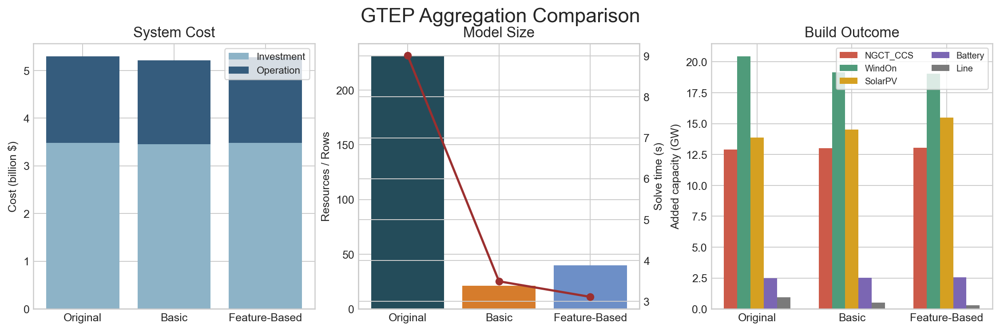
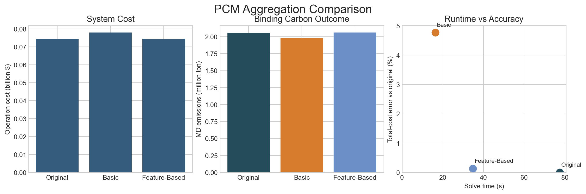

Resource Aggregation
Resource aggregation is a fleet simplification option in HOPE. It is used when a case contains many generators or storage resources that are similar enough to be grouped, and solving the fully disaggregated model would be unnecessarily slow or memory-intensive. In high-level terms, resource aggregation reduces model size by combining similar resources into a smaller set of representative rows, while trying to preserve the characteristics that matter for planning and operations.
This functionality is most useful when users want to accelerate large GTEP or PCM cases, compare alternative aggregation strategies, or study how much model fidelity is lost when detailed fleets are simplified. It is especially relevant when the original fleet contains many same-zone, same-technology resources, but some of those resources still differ in costs, flexibility, outages, emissions, or commitment behavior. The aggregation methods below are designed to let users control how aggressively HOPE simplifies those fleets and which features should be preserved.
HOPE keeps the high-level aggregation switch in HOPE_model_settings.yml:
resource_aggregation: 1When resource_aggregation = 1, HOPE reads the advanced controls from:
Settings/HOPE_aggregation_settings.ymlThis keeps HOPE_model_settings.yml short while moving the method details into a separate advanced settings file.
Aggregation Design
HOPE now treats resource aggregation as two aggregation methods:
basicfeature_based
For PCM with unit commitment, there is one additional internal UC treatment:
clustered_thermal_commitment: 0/1
That PCM switch is not a separate aggregation method. It only changes how aggregated thermal UC resources behave after the grouping step.
Common Settings
A typical HOPE_aggregation_settings.yml starts from:
write_aggregation_audit: 1 # 1 write aggregation audit CSVs into output/; 0 disable
# basic = keyed aggregation only
# feature_based = keyed aggregation, then split large groups using clustering features
aggregation_method: basic
# Existing resources are only grouped when all listed fields match.
grouping_keys:
- Zone
- Type
- Flag_RET
- Flag_mustrun
- Flag_VRE
- Flag_thermal
# Additional grouping keys used only in PCM.
pcm_additional_grouping_keys:
- Flag_UC
# PCM internal UC treatment for aggregated thermal resources.
# 1 = aggregated thermal UC rows track unit counts
# 0 = aggregated thermal UC rows behave like single averaged units
clustered_thermal_commitment: 1
# Numeric columns used only when aggregation_method: feature_based
clustering_feature_columns:
- Cost (\$/MWh)
- FOR
- CC
- AF
- RU
- RD
- Pmax (MW)
- Pmin (MW)
# Approximate number of original resources per feature-based cluster.
clustering_target_cluster_size: 4
# Maximum number of feature-based clusters created inside one keyed group.
# 0 = no cap
clustering_max_clusters_per_group: 4
# 1 = z-score normalize clustering features before clustering
# 0 = use raw feature values
normalize_clustering_features: 1
# If empty, all technologies are eligible for aggregation.
aggregate_technologies: []
# Technologies kept fully separate even when resource_aggregation: 1
keep_separate_technologies: []Audit Outputs
When write_aggregation_audit: 1, HOPE writes:
resource_aggregation_mapping.csvresource_aggregation_summary.csvresource_aggregation_af_summary.csvin GTEP when generator AF aggregation is available
These outputs let users check:
- which original resources were merged into each aggregated resource
- how large each aggregated group is
- how the aggregated parameters changed after merging
Method 1: Basic Aggregation
Focus
basic aggregation is the default structured aggregation method.
Mechanism
HOPE forms groups using:
grouping_keyspcm_additional_grouping_keysin PCMaggregate_technologieskeep_separate_technologies
Then HOPE merges each keyed group using technology-family-aware averaging rules already implemented in the input readers.
Interpretation
basic aggregation is:
- transparent
- fast
- easy to audit
But it can blur important within-group heterogeneity if many different resources share the same keyed group.
Recommendation
Use basic aggregation when:
- the fleet is already fairly template-driven
- you mainly want a smaller model
- you want the most stable and fastest aggregated run
Method 2: Feature-Based Aggregation
Focus
feature_based aggregation is designed for cases where keyed groups are still too heterogeneous.
Mechanism
HOPE first forms the same keyed groups used by basic aggregation. Then, inside each sufficiently large keyed group, it:
- builds a numeric feature matrix from
clustering_feature_columns - optionally normalizes those features
- splits the keyed group into smaller sub-clusters
- aggregates each sub-cluster separately
So the final aggregated fleet stays smaller than the original model, but it keeps more operational and planning structure than basic.
Interpretation
feature_based aggregation is best thought of as:
- still an aggregation method
- but a similarity-aware one instead of a pure keyed merge
Its quality depends on the feature list. If an important hidden driver is omitted from clustering_feature_columns, the result can still differ from the original model.
Recommendation
Use feature_based aggregation when:
- keyed groups contain clear internal heterogeneity
- you want a better accuracy/runtime tradeoff than
basic - you know which numeric features are most important for the study
PCM Internal Option: Clustered Thermal Commitment
clustered_thermal_commitment only matters in PCM when:
resource_aggregation = 1unit_commitment != 0- aggregated thermal UC rows exist
When it is on, aggregated thermal UC resources keep:
NumUnitsClusteredUnitPmax (MW)ClusteredUnitPmin (MW)
and the PCM UC variables count online/startup/shutdown units instead of using a single on/off unit for the aggregated row.
This can improve fidelity for thermal UC behavior, but it does not change how resources are grouped. The grouping method is still chosen by aggregation_method.
Comparison Example: GTEP
Saved comparison cases:
ModelCases/MD_GTEP_clean_case_methods_originalModelCases/MD_GTEP_clean_case_methods_basicModelCases/MD_GTEP_clean_case_methods_feature
Settings used in this example:
originalresource_aggregation: 0
basic
aggregation_method: basic
grouping_keys:
- Zone
- Type
- Flag_RET
- Flag_mustrun
- Flag_VRE
- Flag_thermal
clustering_feature_columns:
- Cost (\$/MWh)
- FOR
- Pmax (MW)
- Pmin (MW)
clustering_target_cluster_size: 4
clustering_max_clusters_per_group: 6feature
aggregation_method: feature_based
grouping_keys:
- Zone
- Type
- Flag_RET
- Flag_mustrun
- Flag_VRE
- Flag_thermal
clustering_feature_columns:
- Cost (\$/MWh)
- FOR
- Pmax (MW)
- Pmin (MW)
clustering_target_cluster_size: 4
clustering_max_clusters_per_group: 6These cases were built to create:
- within-group cost and outage heterogeneity that
feature_basedcan partially preserve - hidden capacity-credit heterogeneity that is not in the feature list
So all three methods differ:
| Case | Aggregation | Aggregated Resources | Total Cost ($) | Solve Time (s) |
|---|---|---|---|---|
original | none | 231 | 5.299e9 | 9.01 |
basic | keyed merge | 21 | 5.212e9 | 3.49 |
feature | keyed + feature-based split | 40 | 5.273e9 | 3.11 |

Useful files:
ModelCases/MD_GTEP_clean_case_methods_original/output/system_cost.csvModelCases/MD_GTEP_clean_case_methods_basic/output/system_cost.csvModelCases/MD_GTEP_clean_case_methods_feature/output/system_cost.csvModelCases/MD_GTEP_clean_case_methods_basic/output/resource_aggregation_summary.csvModelCases/MD_GTEP_clean_case_methods_feature/output/resource_aggregation_summary.csv
Interpretation:
basicis the most compressed and gives the lowest cost in this benchmarkfeaturekeeps more structure thanbasic, so it lands betweenbasicandoriginal- both aggregated methods remain much smaller than the original case
Comparison Example: PCM
Saved comparison cases:
ModelCases/MD_PCM_Excel_case_aggmethods_1month_originalModelCases/MD_PCM_Excel_case_aggmethods_1month_basicModelCases/MD_PCM_Excel_case_aggmethods_1month_feature
Settings used in this example:
originalresource_aggregation: 0
basic
aggregation_method: basic
grouping_keys:
- Zone
- Type
- Flag_mustrun
- Flag_VRE
- Flag_thermal
pcm_additional_grouping_keys:
- Flag_UC
clustered_thermal_commitment: 1
clustering_feature_columns:
- Cost (\$/MWh)
- FOR
- RU
- RD
- RM_SPIN
- Start_up_cost (\$/MW)
- Min_down_time
- Min_up_time
- Pmax (MW)
- Pmin (MW)
clustering_target_cluster_size: 2
clustering_max_clusters_per_group: 6feature
aggregation_method: feature_based
grouping_keys:
- Zone
- Type
- Flag_mustrun
- Flag_VRE
- Flag_thermal
pcm_additional_grouping_keys:
- Flag_UC
clustered_thermal_commitment: 1
clustering_feature_columns:
- Cost (\$/MWh)
- EF
- FOR
- RU
- RD
- RM_SPIN
- Start_up_cost (\$/MW)
- Min_down_time
- Min_up_time
- Pmax (MW)
- Pmin (MW)
clustering_target_cluster_size: 2
clustering_max_clusters_per_group: 6This one-month benchmark was built to combine:
- operational heterogeneity that
feature_basedcan see - emissions heterogeneity that becomes important under a binding carbon cap
- a binding carbon cap
- network and reserve constraints
- enough capacity that load shedding is effectively eliminated, so the comparison is driven by operating economics rather than scarcity penalties
So all three methods differ:
| Case | Aggregation | Aggregated Resources | Total Cost ($) | Solve Time (s) |
|---|---|---|---|---|
original | none | 285 | 7.4425e7 | 77.49 |
basic | keyed merge | 33 | 7.7976e7 | 16.29 |
feature | keyed + feature-based split | 92 | 7.4525e7 | 34.70 |

Useful files:
ModelCases/MD_PCM_Excel_case_aggmethods_1month_original/output/system_cost.csvModelCases/MD_PCM_Excel_case_aggmethods_1month_basic/output/system_cost.csvModelCases/MD_PCM_Excel_case_aggmethods_1month_feature/output/system_cost.csvModelCases/MD_PCM_Excel_case_aggmethods_1month_basic/output/resource_aggregation_summary.csvModelCases/MD_PCM_Excel_case_aggmethods_1month_feature/output/resource_aggregation_summary.csv
Interpretation:
basicandfeature_basedare both much faster than the original PCM casebasicis the fastest PCM option here, but it is also the farthest from the original result- after adding
EFtoclustering_feature_columns,feature_basedbecomes clearly closer to the original thanbasic feature_basedis still not exact, which is useful: it shows that aggregation quality improves when the feature set includes the true binding drivers, but it still depends on how much structure is compressed
For this revised PCM example:
- all three cases have
0load shedding - original MD emissions are about
2.059e6ton basicshifts that to about1.978e6tonfeature_basedlands at about2.062e6ton
So the comparison now shows the intended message more clearly:
basicis the strongest size reduction and the fastest solvefeature_basedis a better fidelity/runtime compromise when the feature set is chosen well- because scarcity is removed, the differences now reflect dispatch and carbon-constraint behavior rather than emergency unmet load
Default Aggregation Setting
For most users, the recommended default is:
resource_aggregation: 1in HOPE_model_settings.yml, together with:
write_aggregation_audit: 1
aggregation_method: basic
grouping_keys:
- Zone
- Type
- Flag_RET
- Flag_mustrun
- Flag_VRE
- Flag_thermal
pcm_additional_grouping_keys:
- Flag_UC
clustered_thermal_commitment: 1
clustering_feature_columns:
- Cost (\$/MWh)
- FOR
- CC
- AF
- RU
- RD
- Pmax (MW)
- Pmin (MW)
clustering_target_cluster_size: 4
clustering_max_clusters_per_group: 4
normalize_clustering_features: 1
aggregate_technologies: []
keep_separate_technologies: []Interpretation:
- start from
aggregation_method: basic - stay with
basicwhen the keyed groups already look fairly homogeneous in the parameters that matter for the study - use the keyed grouping first
- keep audit outputs on
- in PCM, keep
clustered_thermal_commitment: 1as the default internal UC treatment for aggregated thermal rows - add
EFtoclustering_feature_columnswhen emissions are likely to be a binding driver - only switch to
feature_basedafter checking whether the keyed groups are still too heterogeneous for the study objective
Practical Workflow
- Start with
resource_aggregation: 1andaggregation_method: basic. - Check the audit outputs to see which keyed groups are large or heterogeneous.
- If needed, switch to
aggregation_method: feature_based. - Tune
clustering_feature_columnsso they reflect the study objective. - In PCM with UC, decide separately whether
clustered_thermal_commitmentshould stay on.
References
The current HOPE resource aggregation design was informed by the following literature and software documentation.
PyPSA documentation, "Network Clustering." https://docs.pypsa.org/v1.1.1/user-guide/clustering/
GenX.jl documentation, "Model Configuration." https://genxproject.github.io/GenX.jl/stable/UserGuide/modelconfiguration/
GenX.jl documentation, "Workflow." https://genxproject.github.io/GenX.jl/stable/User_Guide/workflow/
Bernardo A. Knueven, James Ostrowski, and Jean-Paul Watson, "On mixed-integer programming formulations for the unit commitment problem," INFORMS Journal on Computing, 2020. https://www.osti.gov/pages/biblio/1421648
Michael Koller and Johannes Hofmann, "Efficient clustering of identical generating units for the MILP unit commitment problem," Computers & Chemical Engineering, 2019. DOI: 10.1016/j.compchemeng.2019.03.032
Germán Morales-España and Sergio Tejada-Arango, "Modeling the hidden flexibility of clustered unit commitment," IIT Comillas technical note. https://www.iit.comillas.edu/publicacion/revista/en/1399/Modelingthehiddenflexibilityofclusteredunit_commitment